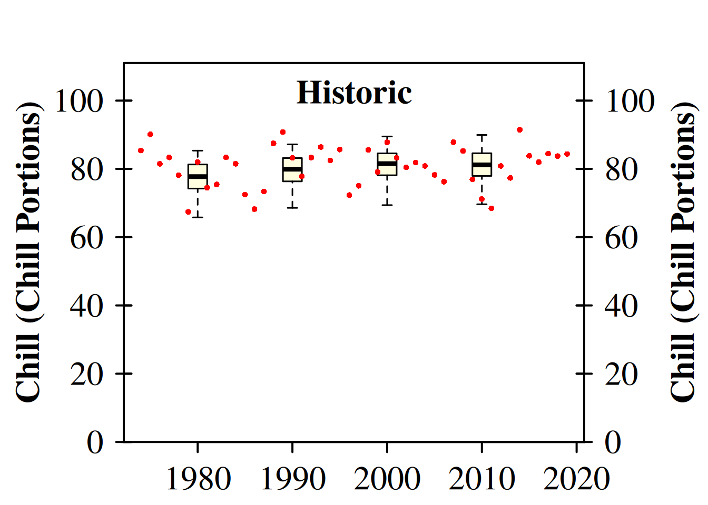
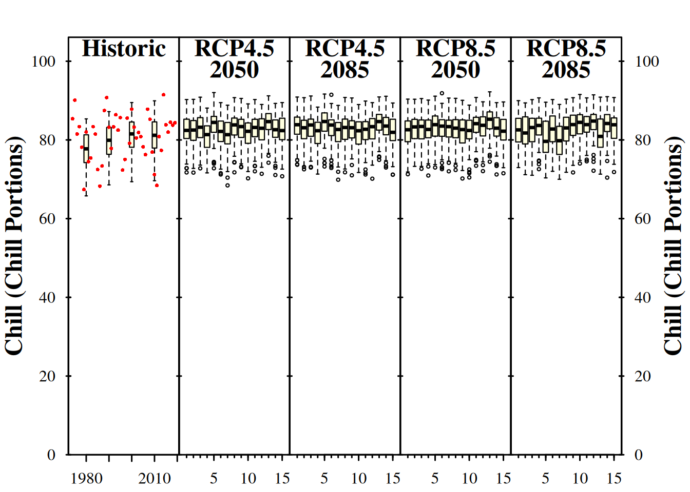
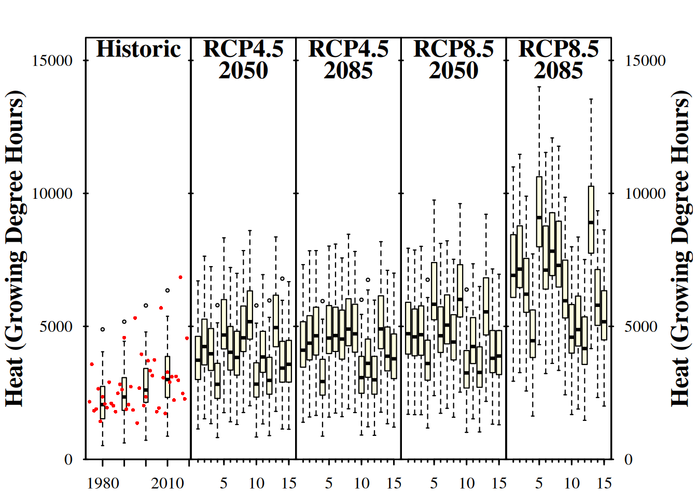
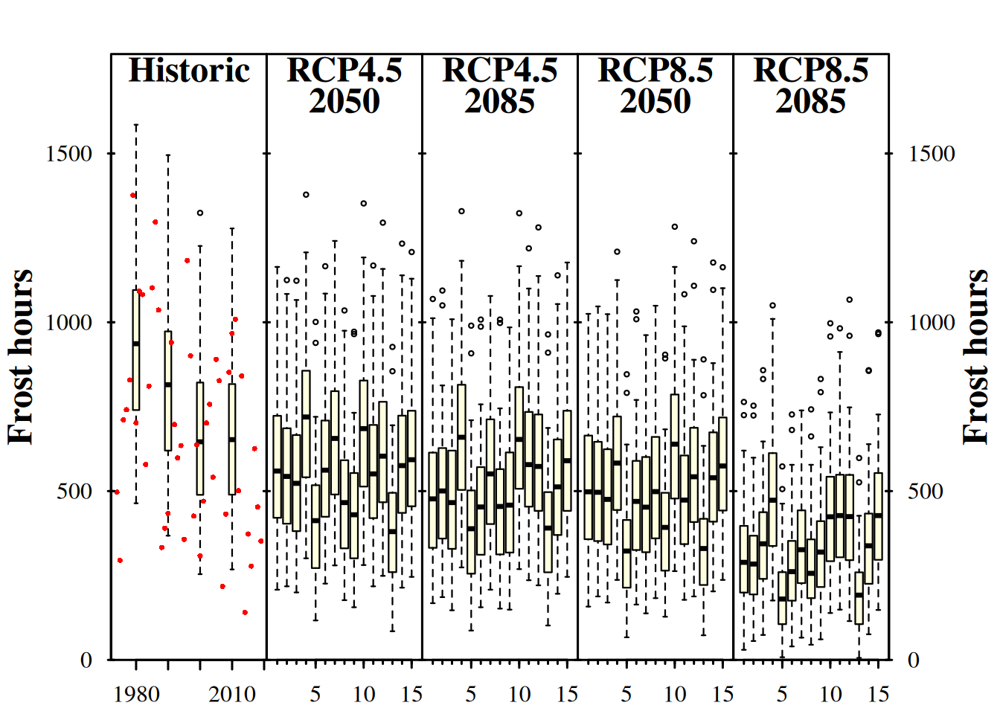

Chapter 17 Making CMIP5 scenarios with the ClimateWizard
Note that this chapter only deals with CMIP5 climate scenarios. For methods to produce CMIP6 scenarios refer to the chapter on Making CMIP6 scenarios
Learning goals for this lesson
- Learn how to download future temperature projections from the ClimateWizard database
- Be able to produce synthetic temperature scenarios for an ensemble of future climate scenarios
- Transfer knowledge you gained earlier to compute temperature-based agroclimatic metrics for all the historic temperature records, as well as for past and future temperature scenarios
- Learn how to plot all your results in a concise manner
17.1 Using the ClimateWizard
Here we’ll use the ClimateWizard tool to download some future data, produced by the CMIP5 models for the RCPs 4.5 and 8.5 (these are the only scenarios that are available there). I should note here that the ClimateWizard service has been down from time to time, so the following code doesn’t always work.
We’ll first look at a small example to familiarize ourselves with the way this function works:
getClimateWizardData(coordinates = c(longitude = 10.61,
latitude = 34.93),
scenario = "rcp45",
start_year = 2020,
end_year = 2050,
metric = c("CD18", "R02"),
GCMs = c("bcc-csm1-1", "BNU-ESM"))This code only downloaded data for two GCMs and one RCP scenario. We’re accessing two climate metrics:
- “CD18” - cooling degree days (>18°C)
- “R02” - the annual number of wet days > 0.2 mm/day
We’ll get mean values of all years from 2020 to 2050 for a position with longitude=10.61 and latitude=34.93 (somewhere in Tunisia).
These metrics aren’t of interest to us, and we’d rather use data from Bonn than Tunisia. Also we’d like to have data for all the climate models in the dataset and for both RCPs (there are only two in the database unfortunately). Finally, since we want to use these data for producing temperature scenarios for our weather generator, we’d like to get information on expected future \(T_{min}\) and \(T_{max}\) values. Since the latter is a pretty standard objective in the context of chillR, the default option for the metric parameter is actually the string monthly_min_max_temps, which instructs the function to download all the information we need for the weather generator.
There is no automated function for downloading multiple RCPs or multiple points in time, but we can easily implement this using for loops. We still have to decide what baseline period we want to use for our analysis.
The weather record from Bonn goes from 1973 to 2019. Unfortunately, the ClimateWizard database requires the baseline period to be a 20-year interval between 1950 and 2005. Since climate has been changing over the 71-year span we have data for, we may want to choose an interval towards the end of this period. Let’s therefore select the 31-year interval between 1975 and 2005 (I’m using 31 years, because then the median year is an integer - this isn’t necessary, but somehow more aesthetically pleasing than some .5 business). The median year is now 1990.
We’ll save the temperature scenarios after download to make sure we don’t have to download them again (this takes quite a while).
RCPs <- c("rcp45",
"rcp85")
Times <- c(2050,
2085)
for(RCP in RCPs)
for(Time in Times)
{start_year <- Time - 15
end_year <- Time + 15
clim_scen <-
getClimateWizardData(
c(longitude = 7.143,
latitude = 50.866),
RCP,
start_year,
end_year,
temperature_generation_scenarios = TRUE,
baseline =c(1975, 2005),
metric = "monthly_min_max_temps",
GCMs = "all")
save_temperature_scenarios(clim_scen,
"data/ClimateWizard",
paste0("Bonn_futures_",Time,"_",RCP))}So we selected a period from 1975 to 2005 as the baseline for the future climate data. We could now also restrict the observed weather data used for calibrating the weather generator to the same interval. That would make some sense, but let’s say we want to use all of our observed data, which ranges from 1973 to 2019. The median of this period is 1996, which is different from 1990. So we need a baseline adjustment:
scenario_1990 <- Bonn_temps %>%
temperature_scenario_from_records(1990)
scenario_1996 <- Bonn_temps %>%
temperature_scenario_from_records(1996)
adjustment_scenario <-
temperature_scenario_baseline_adjustment(scenario_1996,
scenario_1990)
print(adjustment_scenario)## $`1990`
## $`1990`$data
## Tmin Tmax
## 1 -0.99579679 -0.6210091
## 2 -1.86677592 -1.5459190
## 3 -1.20033682 -1.1873413
## 4 -0.68914526 -0.3104731
## 5 -0.68845639 -1.2664810
## 6 -0.37827139 -1.0444977
## 7 -0.02404052 -0.4298024
## 8 -0.43250891 -0.7725862
## 9 -0.46704649 -0.6377817
## 10 -0.10234398 0.4300303
## 11 -0.52482427 -0.1198558
## 12 -0.10439345 0.4106072
##
## $`1990`$scenario_year
## [1] 1990
##
## $`1990`$reference_year
## [1] 1996
##
## $`1990`$scenario_type
## [1] "relative"
##
## $`1990`$labels
## [1] "running mean scenario"We see that the reference year is now 1996. This is correct, because this scenario will be used for temperature generation, where we’ll use the whole observed record for calibration. This adjustment scenario will have to be applied to all downloaded weather scenarios.
We first need to select the RCPs and scenario years for our analysis:
Now we load the saved scenarios again. Saving and loading wouldn’t be absolutely necessary of course, but it really comes in handy when our computer crashes, we accidentally close RStudio etc. The load_ClimateWizard_scenarios function was specifically written to load such scenarios.
We’ll also add the baseline adjustment and the temperature generation step here, and then save the generated weather:
for(RCP in RCPs)
for(Time in Times)
{
clim_scen <- load_ClimateWizard_scenarios(
"data/climateWizard",
paste0("Bonn_futures_",
Time,
"_",
RCP))
clim_scen_adjusted <-
temperature_scenario_baseline_adjustment(
baseline_temperature_scenario = adjustment_scenario,
temperature_scenario = clim_scen)
Temps <- temperature_generation(
weather = Bonn_temps,
years = c(1973,
2019),
sim_years = c(2001,
2101),
temperature_scenario = clim_scen_adjusted)
save_temperature_scenarios(
Temps,
"data/Weather_ClimateWizard",
paste0("Bonn_",
Time,
"_",
RCP))
}This took quite a while, but now we have all the future temperature data we need for our scenario analysis, and all of this is saved to disk. So we don’t have to run this code again.
Let’s add some historic scenarios though. This is similar to what we’ve done before. I’ll make scenarios corresponding to 1980, 1990, 2000 and 2010.
all_past_scenarios <- temperature_scenario_from_records(
weather = Bonn_temps,
year = c(1980,
1990,
2000,
2010))
adjusted_scenarios <- temperature_scenario_baseline_adjustment(
baseline = scenario_1996,
temperature_scenario = all_past_scenarios)
all_past_scenario_temps <- temperature_generation(
weather = Bonn_temps,
years = c(1973,
2019),
sim_years = c(2001,
2101),
temperature_scenario = adjusted_scenarios)
save_temperature_scenarios(
all_past_scenario_temps,
"data/Weather_ClimateWizard",
"Bonn_historic")Now all we have to do is follow the steps we used to make our historic scenarios. The tempResponse_daily_list function makes this reasonably easy. Let’s first make a list of models we want to apply - I’m choosing the Dynamic Model for chill, the Growing Degree Hours model for heat, and a frost model here:
frost_model <- function(x)
step_model(x,
data.frame(
lower=c(-1000,0),
upper=c(0,1000),
weight=c(1,0)))
models <- list(Chill_Portions = Dynamic_Model,
GDH = GDH,
Frost_H = frost_model)Now let’s first apply these models to the historic data, both the scenarios and the observed temperatures:
Temps <- load_temperature_scenarios("data/Weather_ClimateWizard",
"Bonn_historic")
chill_past_scenarios <-
Temps %>%
tempResponse_daily_list(
latitude = 50.866,
Start_JDay = 305,
End_JDay = 59,
models = models,
misstolerance = 10)
chill_observed <-
Bonn_temps %>%
tempResponse_daily_list(
latitude = 50.866,
Start_JDay = 305,
End_JDay = 59,
models = models,
misstolerance = 10)
save_temperature_scenarios(chill_past_scenarios,
"data/chill_ClimateWizard",
"Bonn_historic")
save_temperature_scenarios(chill_observed,
"data/chill_ClimateWizard",
"Bonn_observed")We’ll later want to plot all our data. In chillR, this is most conveniently done by producing climate scenarios with the make_climate_scenario function. The plotting function we’ll be using later then simply processes a list of such climate scenarios. Let’s start with a historic scenario that contains both the distributions for historic years and the historically observed chill.
chill_past_scenarios <- load_temperature_scenarios(
"data/chill_ClimateWizard",
"Bonn_historic")
chill_observed <- load_temperature_scenarios(
"data/chill_ClimateWizard",
"Bonn_observed")
chills <- make_climate_scenario(
chill_past_scenarios,
caption = "Historic",
historic_data = chill_observed,
time_series = TRUE)
plot_climate_scenarios(
climate_scenario_list = chills,
metric = "Chill_Portions",
metric_label = "Chill (Chill Portions)")
## [[1]]
## [1] "time series labels"As you can see, this function had two effects. It produced a plot and it returned a short list containing the message “time series labels”. This message isn’t too interesting now, but it will later contain more content. If we want to just store this information rather than immediately displaying it in our output, we can assign the plotting command to a new object (as in info <- plot_climate_scenarios(...). The function will then just produce its side effect, which is the plot itself.
Now we run through the same process for all the future climate scenarios. For each one, we add the climate scenario to the chills object (make_climate_scenario has an argument add_to, where we can specify that):
for(RCP in RCPs)
for(Time in Times)
{
Temps <- load_temperature_scenarios(
"data/Weather_ClimateWizard",
paste0("Bonn_",
Time,
"_",
RCP))
chill <- Temps %>%
tempResponse_daily_list(
latitude = 50.866,
Start_JDay = 305,
End_JDay = 59,
models = models,
misstolerance = 10)
save_temperature_scenarios(
chill,
"data/chill_ClimateWizard",
paste0("Bonn_",
Time,
"_",
RCP))
}We now load this again, make climate scenario the same way we did for the historic data, and add them to our chills list so that we can easily plot them:
for(RCP in RCPs)
for(Time in Times)
{
chill <- load_temperature_scenarios(
"data/chill_ClimateWizard",
paste0("Bonn_",
Time,
"_",
RCP))
if(RCP == "rcp45") RCPcaption <- "RCP4.5"
if(RCP == "rcp85") RCPcaption <- "RCP8.5"
if(Time == "2050") Time_caption <- "2050"
if(Time == "2085") Time_caption <- "2085"
chills <- chill %>%
make_climate_scenario(
caption = c(RCPcaption,
Time_caption),
add_to = chills)
}Now we have everything we need to plot the results of our climate change analysis:
info_chill <-
plot_climate_scenarios(
climate_scenario_list = chills,
metric = "Chill_Portions",
metric_label = "Chill (Chill Portions)",
texcex = 1.5)
info_heat <-
plot_climate_scenarios(
climate_scenario_list = chills,
metric = "GDH",
metric_label = "Heat (Growing Degree Hours)",
texcex = 1.5)
info_frost <-
plot_climate_scenarios(
climate_scenario_list=chills,
metric="Frost_H",
metric_label="Frost hours",
texcex=1.5)
Now we can see the trends in chill and heat accumulation, as well as in frost hours for Klein-Altendorf. As we saw earlier, the function didn’t only return the plot, but also some supplementary information, which we stored in the the info... objects in the latest code chunk. If you inspect these objects, you’ll see that they contain the names of the climate models for each of the subplots (in addition to the time series labels for the historic plot). Since we used the same models each time, all information is listed multiple times. Let’s only look at this once, and only for one of the plots:
| code | Label |
|---|---|
| 1 | bcc-csm1-1 |
| 2 | BNU-ESM |
| 3 | CanESM2 |
| 4 | CESM1-BGC |
| 5 | MIROC-ESM |
| 6 | CNRM-CM5 |
| 7 | ACCESS1-0 |
| 8 | CSIRO-Mk3-6-0 |
| 9 | GFDL-CM3 |
| 10 | GFDL-ESM2G |
| 11 | GFDL-ESM2M |
| 12 | inmcm4 |
| 13 | IPSL-CM5A-LR |
| 14 | IPSL-CM5A-MR |
| 15 | CCSM4 |
These labels aren’t provided directly in the plot, because they would take up quite a bit of space. Instead, each model is specified by a number, with the key to these number codes given in this table.
If you don’t like the design of this figure, don’t worry. We’ll be making our own version soon (and there’s also a more modern version in chillR now that we’ll get to know later).